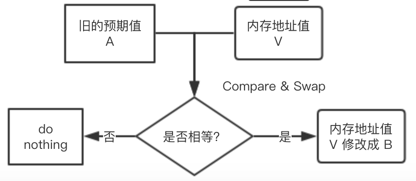

[TOC]
CAS
- 用于实现
多线程同步的原子指令，非阻塞算法，是由CPU硬件实现（比较并交换）
CAS通过调用JNI(java native interface)的代码来操作底层指令来实现。
- Unsafe: compareAndSwap
public final native boolean compareAndSwapInt(Object var1, long var2, int var4, int var5);
- jdk8u: unsafe.cpp
cmpxchg = compare and exchange
- jdk8u atomic_linux_x86.inline.hpp
is_MP = Multi Processor
多CPU情况下会加上Lock（Lock是确保原子性的）
结论：cmpxchg = cas修改变量值， lock cmpxchg 指令；硬件层面：lcok指令在执行后面指令的时候会锁定一个北桥芯片（确保只有一个CPU访问内存）
- 乐观锁

CAS 的缺点
- ABA问题。因为CAS需要在操作值的时候检查下值有没有发生变化，如果没有发生变化则更新，但是如果一个值原来是A，变成了B，又变成了A，那么使用CAS进行检查时会发现它的值没有发生变化，但是实际上却变化了。ABA问题的解决思路就是使用版本号。在变量前面追加上版本号，每次变量更新的时候把版本号加一，那么A－B－A 就会变成1A-2B－3A
（取出内存中某时刻的数据并在当下时刻比较并替换，那么在这个时间差异类会导致数据的变化，内存是变化过的，有中间这个过程）
自旋问题。循环时间长开销大:自旋CAS如果长时间不成功，会给CPU带来非常大的执行开销。如果JVM能支持处理器提供的pause指令那么效率会有一定的提升，pause指令有两个作用，第一:它可以延迟流水线执行指令（de-pipeline）,使CPU不会消耗过多的执行资源，延迟的时间取决于具体实现的版本，在一些处理器上延迟时间是零。第二:它可以避免在退出循环的时候因内存顺序冲突（memory order violation）而引起CPU流水线被清空（CPU pipeline flush），从而提高CPU的执行效率
只能保证一个共享变量的原子操作。当对一个共享变量执行操作时，我们可以使用循环CAS的方式来保证原子操作，但是对多个共享变量操作时，循环CAS就无法保证操作的原子性，这个时候就可以用锁，或者有一个取巧的办法，就是把多个共享变量合并成一个共享变量来操作。比如有两个共享变量i＝2,j=a，合并一下ij=2a，然后用CAS来操作ij。从Java1.5开始JDK提供了AtomicReference类来保证引用对象之间的原子性，你可以把多个变量放在一个对象里来进行CAS操作
AtomicInteger 使用 CAS
volatile 非原子性
import java.util.Random;
import java.util.concurrent.TimeUnit;
public class Main {
public volatile static int num = 0;
public static void add() {
num++;
}
public synchronized static void addSync() {
num++;
}
private final static int N = 30;
public static void main(String[] args) throws Exception {
Thread[] threads = new Thread[N];
for(int i=0;i<N;i++){
threads[i] = new Thread(()->{
try{
TimeUnit.MILLISECONDS.sleep(new Random().nextInt(10));
int addCnt = 100;
for(int j=0;j<addCnt;j++){
add();
}
}catch (Exception e){
e.printStackTrace();
}
});
threads[i].start();
}
for(int i=0;i<N;i++) {
threads[i].join();
}
System.out.println("num:" + num);
}
}
/* output
小于3000的值
*/
AtomicInteger使用例子
package com.mb;
import java.text.SimpleDateFormat;
import java.util.Date;
import java.util.Random;
import java.util.concurrent.TimeUnit;
import java.util.concurrent.atomic.AtomicInteger;
public class Main {
static SimpleDateFormat ft = new SimpleDateFormat ("yyyy.MM.dd HH:mm:ss SSS");
public static int num = 0;
public static AtomicInteger atomicInteger = new AtomicInteger(0);
public static void atomicAdd() {
atomicInteger.incrementAndGet();
}
public static void add() {
num++;
}
public synchronized static void addSync() {
num++;
}
private final static int N = 30;
public static void main(String[] args) throws Exception {
Thread[] threads = new Thread[N];
System.out.println(ft.format(new Date()));
for(int i=0;i<N;i++){
threads[i] = new Thread(()->{
try{
TimeUnit.MILLISECONDS.sleep(new Random().nextInt(10));
int addCnt = 100;
for(int j=0;j<addCnt;j++){
// addSync();
atomicAdd();
}
}catch (Exception e){
e.printStackTrace();
}
});
threads[i].start();
}
for(int i=0;i<N;i++) {
threads[i].join();
}
System.out.println(ft.format(new Date()));
// System.out.println("num:" + num);
System.out.println("num:" + atomicInteger);
}
}
/*output
3000 (因为是原子操作)
*/
incrementAndGet()
public final int incrementAndGet() {
return unsafe.getAndAddInt(this, valueOffset, 1) + 1;
}
public final int getAndAddInt(Object var1, long var2, int var4) {
int var5;
do {
var5 = this.getIntVolatile(var1, var2);
} while(!this.compareAndSwapInt(var1, var2, var5, var5 + var4));
return var5;
}
public final native boolean compareAndSwapInt(Object var1, long var2, int var4, int var5);
unsafe 的一些方法
Unsafe提供了一些低层次操作，如直接内存访问、线程调度等(不安全，不推荐)
unsafe.objectFieldOffset()
private static Unsafe unsafe = null;
private static long valueOffset;
static {
try{
Class<?> clazz = Unsafe.class;
Field f;
f = clazz.getDeclaredField("theUnsafe");
f.setAccessible(true);
unsafe = (Unsafe) f.get(clazz);
valueOffset = unsafe.objectFieldOffset(Main.class.getDeclaredField("value"));
} catch (IllegalAccessException e) {
e.printStackTrace();
}catch (SecurityException e) {
e.printStackTrace();
} catch (NoSuchFieldException e) {
e.printStackTrace();
}
}
JVM的实现可以自由选择如何实现Java对象的"布局"，也就是在内存里Java对象的各个部分放在哪里，包括对象的实例字段和一些元数据之类。sun.misc.Unsafe里关于对象字段访问的方法把对象布局抽象出来，它提供了objectFieldOffset()方法用于获取某个字段相对Java对象的“起始地址”的偏移量，也提供了getInt、getLong、getObject之类的方法可以使用前面获取的偏移量来访问某个Java对象的某个字段
- 参考：
作者：世界屋顶 来源：CSDN 原文：url地址
compareAndSwapInt
public final native boolean compareAndSwapInt(Object var1, long var2, int var4, int var5);
即:
boolean compareAndSwapInt(Object obj,long fieldoffset, int expect, int update);
内存值V、旧的预期值A、要修改的值B
当且仅当预期值A和内存值V相同时，将内存值修改为B并返回true，否则什么都不做并返回false。
即 当要修改obj对象的（fieldoffset）Int属性值与expect相同时,则修改（fieldoffset）Int为update，并返回true,否则什么都不做，返回false
getIntVolatile
public native int getIntVolatile(Object var1, long var2);
getIntVolatile方法用于在对象指定偏移地址处volatile读取一个int。
unsafe线程安全操作例子程序
public class Main {
private static Unsafe unsafe = null;
private static long valueOffset;
static {
try{
Class<?> clazz = Unsafe.class;
Field f;
f = clazz.getDeclaredField("theUnsafe");
f.setAccessible(true);
unsafe = (Unsafe) f.get(clazz);
valueOffset = unsafe.objectFieldOffset(Main.class.getDeclaredField("value"));
} catch (IllegalAccessException e) {
e.printStackTrace();
}catch (SecurityException e) {
e.printStackTrace();
} catch (NoSuchFieldException e) {
e.printStackTrace();
}
}
private volatile int value;
public final int get() {
return value;
}
public final void set(int newValue) {
value = newValue;
}
public void addAndIncrease() {
int var5;
do {
var5 = unsafe.getIntVolatile(this, valueOffset);
} while(!unsafe.compareAndSwapInt(this, valueOffset, var5, var5 + 1));
}
public void add() {
value ++;
}
public synchronized void addSync() {
value ++;
}
private final static int N = 30;
public static void main(String[] args) throws Exception {
Main m = new Main();
m.set(2);
Thread[] threads = new Thread[N];
for(int i=0;i<N;i++){
threads[i] = new Thread(()->{
try{
TimeUnit.MILLISECONDS.sleep(new Random().nextInt(10));
int addCnt = 100;
for(int j=0;j<addCnt;j++){
// m.add();
// m.addSync();
m.addAndIncrease();
}
}catch (Exception e){
e.printStackTrace();
}
});
threads[i].start();
}
for(int i=0;i<N;i++) {
threads[i].join();
}
System.out.println("value:" + m.get());
}
}
原子引用（AtomicReference）
对对象进行原子操作,提供了一种读和写都是原子性的对象引用变量。原子意味着多个线程试图改变同一个AtomicReference(例如比较和交换操作)将不会使得AtomicReference处于不一致的状态。
AtomicReference和AtomicInteger非常类似，不同之处就在于AtomicInteger是对整数的封装，底层采用的是compareAndSwapInt实现CAS，比较的是数值是否相等，而AtomicReference则对应普通的对象引用，底层使用的是compareAndSwapObject实现CAS，比较的是两个对象的地址是否相等。也就是它可以保证你在修改对象引用时的线程安全性。
class User{
String userName;
int age;
public User(String userName, int age) {
this.userName = userName;
this.age = age;
}
public String getUserName() {
return userName;
}
public void setUserName(String userName) {
this.userName = userName;
}
public int getAge() {
return age;
}
public void setAge(int age) {
this.age = age;
}
@Override
public String toString() {
return "User{" +
"userName='" + userName + '\'' +
", age=" + age +
'}';
}
}
public class Main {
public static void main(String[] args) {
User z3 = new User("z3", 12);
User l4 = new User("l4", 15);
AtomicReference<User> atomicReference = new AtomicReference<>();
atomicReference.set(z3);
boolean b = atomicReference.compareAndSet(z3, l4);
System.out.println(b);
System.out.println(atomicReference.get().toString());
b = atomicReference.compareAndSet(z3, l4);
System.out.println(b);
System.out.println(atomicReference.get().toString());
}
}
AtomicStampedReference（用版本解决ABA）
ABA问题
public class Main {
static AtomicReference<Integer> atomicReference = new AtomicReference<>(100);
public static void main(String[] args) {
new Thread(()->{
boolean b = atomicReference.compareAndSet(100, 101); // A B A
System.out.println(Thread.currentThread().getName() + " " + b + " " + atomicReference.get().toString());
b = atomicReference.compareAndSet(101, 100);
System.out.println(Thread.currentThread().getName() + " " + b + " " + atomicReference.get().toString());
}, "t1").start();
new Thread(()->{
try{
TimeUnit.SECONDS.sleep(1);
}catch (Exception e){
}
// t2 修改成功, 另外一个线程从 100 变成 101 又变成了 100， b比较判断是100，所以能修改成功
boolean b = atomicReference.compareAndSet(100, 102);
System.out.println(Thread.currentThread().getName() + " " + b + " " + atomicReference.get().toString());
}, "t2").start();
}
}
ABA问题的解决（加上版本）
public class Main {
static AtomicStampedReference<Integer> atomicStampedReference = new AtomicStampedReference<>(100, 1);
public static void main(String[] args) {
new Thread(()->{
int stamp = atomicStampedReference.getStamp();
System.out.println(Thread.currentThread().getName() + " " + stamp);
try{
TimeUnit.SECONDS.sleep(1);
}catch (Exception e){
}
boolean b = atomicStampedReference.compareAndSet(100, 101,
atomicStampedReference.getStamp(),
atomicStampedReference.getStamp() + 1); // A B A
System.out.println(Thread.currentThread().getName() + " " + b + " " + atomicStampedReference.getStamp());
b = atomicStampedReference.compareAndSet(101, 100,
atomicStampedReference.getStamp(),
atomicStampedReference.getStamp() + 1);
System.out.println(Thread.currentThread().getName() + " " + b + " " + atomicStampedReference.getStamp());
}, "t1").start();
new Thread(()->{
// t2 修改成功
int stamp = atomicStampedReference.getStamp();
System.out.println(Thread.currentThread().getName() + " " + stamp);
try{
TimeUnit.SECONDS.sleep(4);
}catch (Exception e){
}
boolean b = atomicStampedReference.compareAndSet(100, 102, stamp, stamp + 1);
System.out.println(Thread.currentThread().getName() + " " + b + " " + atomicStampedReference.getStamp());
}, "t2").start();
}
}
- output
t1 1
t2 1
t1 true 2
t1 true 3
t2 false 3
t1,t2某时候同一版本 然后t1执行 A->B->A, 不过加上了版本 然后t2判断是有版本变更的，所以CAS操作失败